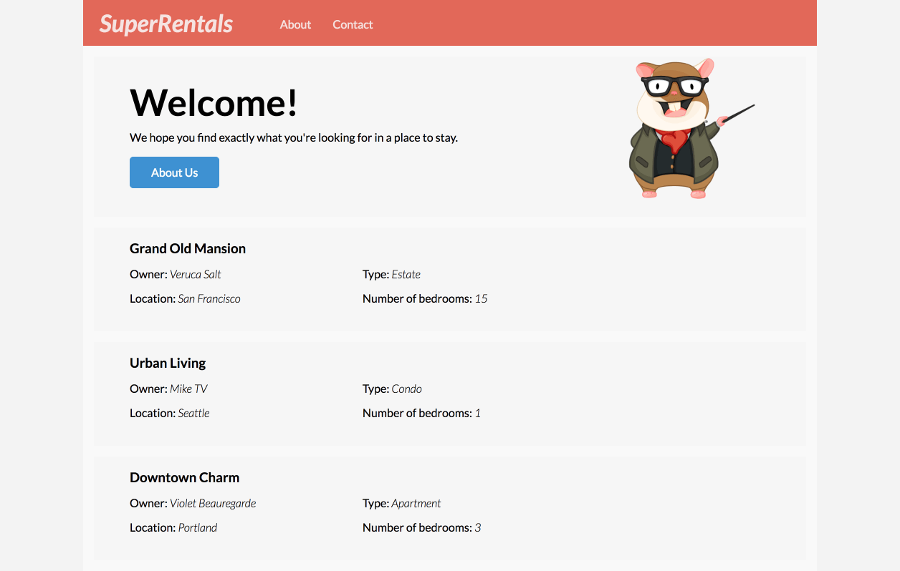

アドオンのインストール 編集
Emberには、プロジェクトに簡単に追加できる豊富なエコシステムがあります。 アドオンは、プロジェクトに幅広い機能を提供し、時間を節約し、プロジェクトに集中することができます。
アドオンを参照するには、Ember Observerを参照してください。 NPMに公開されているEmberアドオンをカタログ化しカテゴリー毎に分け、さまざまな基準に基づいてスコアを割り当てます。
Super Rentalsでは、ember-cli-tutorial-styleとember-cli-mirageの2つのアドオンを使います。
ember-cli-tutorial-styleアドオン
チュートリアルの読者のために、Super RentalsのスタイルにCSSをコピー/ペーストさせるのではなく、即座にCSSをチュートリアルに追加する[ember-cli-tutorial-style]というアドオンを用意しています。
このアドオンは、ember-tutorial.cssというファイルを生成し、そのファイルをプロジェクトのvendorディレクトリに入れて動作します。
Emberのvendorディレクトリは、アプリケーションにコンパイルされるコンテンツを含めることができる特別なディレクトリです。
Ember CLIが実行されると、ember-tutorialCSSファイルがvendor.cssというファイルに置かれます。
vendor.cssファイルはapp/index.htmlで参照され、実行時にスタイルを利用可能にします。
vendor/ember-tutorial.cssは手を加えることができます。変更を反映するにはアプリケーションの再起動が必要です。
次のコマンドを実行してアドオンをインストールします:
1 |
ember install ember-cli-tutorial-style |
出力は以下のようになります。
1 2 3 4 5 |
NPM: Installed ember-cli-tutorial-style installing ember-cli-tutorial-style create public/assets/images/teaching.png create vendor/ember-tutorial.css Installed addon package. |
Emberアドオンはnpmパッケージなので、ember installはアドオンをnode_modulesディレクトリにインストールし、package.jsonにエントリを作成します。 アドオンが正常にインストールされたら、必ずサーバーを再起動してください。 サーバーを再起動すると新しいCSSが組み込まれ、ブラウザウィンドウを更新すると次のようになります。

ember-cli-mirageアドオン
Mirage(ミラージュ)は、Emberのアプリケーションテストによく使用されるクライアントのHTTPスタブライブラリです。 このチュートリアルでは、伝統的なバックエンドサーバーではなく、データソースとしてMirageを使用します。 Mirageで、開発用に偽のデータとAPIを作成できます。 ここで設定するデータとエンドポイントは、このチュートリアルの後半の「Ember Dataを使用してサーバーリクエストを行う」で説明されています。
以下のコマンドを実行してMirageをインストールします。
1 |
ember install ember-cli-mirage |
Mirageでまず着目すべき点は、APIエンドポイントとデータを定義できるconfig.jsファイルです。
JSONデータの形式はJSON-APIの仕様に合わせています。
mirage/config.jsを更新して、上記で定義したレンタルを返送するようにMirageを設定しましょう：
| mirage/config.js | |
1 2 3 4 5 6 7 8 9 10 11 12 13 14 15 16 17 18 19 20 21 22 23 24 25 26 27 28 29 30 31 32 33 34 35 36 37 38 39 40 41 42 43 44 45 46 47 48 49 50 51 52 53 54 55 56 57 58 59 60 61 62 63 64 65 66 67 |
export default function() { this.namespace = '/api'; this.get('/rentals', function() { return { data: [{ type: 'rentals', id: 'grand-old-mansion', attributes: { title: 'Grand Old Mansion', owner: 'Veruca Salt', city: 'San Francisco', category: 'Estate', bedrooms: 15, image: 'https://upload.wikimedia.org/wikipedia/commons/c/cb/Crane_estate_(5).jpg' } }, { type: 'rentals', id: 'urban-living', attributes: { title: 'Urban Living', owner: 'Mike Teavee', city: 'Seattle', category: 'Condo', bedrooms: 1, image: 'https://upload.wikimedia.org/wikipedia/commons/0/0e/Alfonso_13_Highrise_Tegucigalpa.jpg' } }, { type: 'rentals', id: 'downtown-charm', attributes: { title: 'Downtown Charm', owner: 'Violet Beauregarde', city: 'Portland', category: 'Apartment', bedrooms: 3, image: 'https://upload.wikimedia.org/wikipedia/commons/f/f7/Wheeldon_Apartment_Building_-_Portland_Oregon.jpg' } }] }; }); } export default function() { // These comments are here to help you get started. Feel free to delete them. /* Config (with defaults). Note: these only affect routes defined *after* them! */ // this.urlPrefix = ''; // make this `http://localhost:8080`, for example, if your API is on a different server // this.namespace = ''; // make this `/api`, for example, if your API is namespaced // this.timing = 400; // delay for each request, automatically set to 0 during testing /* Shorthand cheatsheet: this.get('/posts'); this.post('/posts'); this.get('/posts/:id'); this.put('/posts/:id'); // or this.patch this.del('/posts/:id'); http://www.ember-cli-mirage.com/docs/v0.3.x/shorthands/ */ } |
Mirageは、ネットワークリクエストを作成するJavaScriptコードをオーバーライドし、代わりに指定したJSONを返します。
これは、開発ツールでネットワークリクエストが表示されず、代わりにコンソールにJSONがログ表示されることに注意してください。
上記のmirage/config.jsの変更で、Ember Dataがapi/rentalsにGETリクエストを行うたびに、ハードコードしたJavaScriptオブジェクトをJSONとして返し、実際にネットワークリクエストは行われないようにMirageを設定しています。
Mirageの設定で/apiのnamespaceを指定しています。
この変更がなければ、アプリケーションの/rentalsへのナビゲーションはMirageと競合します。
上記の変更を動作させるためには、デフォルトで/apiという名前空間へのリクエストを行うよう、アプリケーションの設定が必要です。
これを行うには、アプリケーションアダプターを生成する必要があります。
[アダプター]（../../models/customizing-adaptapters）は、[Ember Data]（../../models）がバックエンドと通信する方法を決定するために使用します。
Ember Dataについては、このチュートリアルの後半で詳しく説明します。
今はアプリケーション用のアダプターを生成しましょう。
1 |
ember generate adapter application |
アプリケーションアダプターはEmber DataからJSONAPIAdapter基底クラスを拡張しています。
| app/adapters/application.js | |
1
2
3
4
5 |
import DS from 'ember-data'; export default DS.JSONAPIAdapter.extend({ namespace: 'api' }); |
別のシェルでember serveまたはember test --serveを実行している場合は、Mirageをビルドに含めるよう、サーバを再起動してください。
チュートリアルのこの時点では、データはapp/routes/rentals.jsファイルによって提供されていることに注意してください。この先のEmber Dataを使うセクションで設定したMirageのデータを使用します。